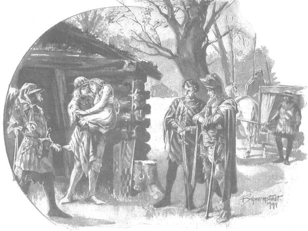

Hôm sau, khi biết tin mụ đầy tớ của Giáo đoàn đã bỏ trốn, hiệp sĩ Amold chỉ cười thầm, song cũng nói điều tương tự như ông Maćko: hoặc là sói sẽ ăn thịt mụ hoặc là mụ bị dân Litva giết. Thực ra, điều đó rất có thể bởi vì người dân gốc Litva bản địa ghét Giáo đoàn và mọi thứ dính dáng đến chúng. Một phần nông nô trốn sang với ông Skirwoiłło, phần khác nổi loạn, giết chết bọn Đức ở nơi này nơi khác, rồi ẩn náu cùng với gia đình và đồ đạc trong rừng sâu không có lối vào. Sáng ra, mọi người cũng đã tìm kiếm mụ đầy tớ, song không có kết quả, cũng bởi họ chẳng mấy cố gắng, vì ông Maćko và Zbyszko đã không ra lệnh ráo riết về việc đó trong khi đang mải bận chuyện khác. Muốn mau về tới Mazowsze, họ định khởi hành ngay từ lúc bình minh, nhưng không thể, bởi vì Danusia thiếp đi mê mệt từ lúc trời gần sáng và Zbyszko không cho phép đánh thức nàng. Đã nghe nàng rên rỉ trong đêm, đoán nàng không ngủ được, vì vậy bây giờ chàng hy vọng nhiều điều tốt từ giấc ngủ say này. Hai lần chàng nhẹ nhàng lẻn vào lều, và cả hai lần, trong ánh sáng chiếu qua các khe hở của tấm vách, chàng nhìn thấy đôi mắt nàng nhắm nghiền, đôi môi hé mở và đôi má đỏ bừng, như một đứa bé đang chìm trong giấc ngủ sâu. Trái tim chàng tan chảy trong niềm xao động, chàng nói với nàng:
- Cầu Chúa cho em nghỉ ngơi và sức khỏe, hỡi đóa hoa đáng yêu nhất!
Rồi chàng lại nói:
- Nỗi thống khổ của em đã qua rồi, than khóc hết rồi, và cầu Đức Chúa Giêsu lòng lành, hạnh phúc sẽ đến với em như nước sông không bao giờ vơi cạn.
Đồng thời, chàng dâng lên Thiên Chúa tâm hồn mộc mạc, nhân từ và tự hỏi: mình sẽ cảm tạ bằng thứ gì, sẽ đền ơn bao nhiêu, sẽ dâng hiến lễ vật gì cho nhà thờ nào, với bao của cải, ngũ cốc, gia súc, sáp ong hoặc những thứ tương tự, mà sức mạnh thiêng liêng yêu thích? Thậm chí chàng muốn thề ngay lập tức và liệt kê chính xác những gì chàng sẽ dâng, nhưng chàng muốn chờ, bởi không biết sức khỏe Danusia sẽ ra sao khi nàng thức tỉnh, liệu nàng đã tỉnh trí hay chưa, nên chàng vẫn chưa chắc sẽ phải cảm ơn những gì.
Mặc dù biết họ sẽ chỉ được an toàn khi về đến vùng đất của quận công Janusz, nhưng ông Maćko cũng hiểu rằng không nên làm mất phút ngơi nghỉ này của Danusia, những giây phút có thể cứu rỗi cho cô gái, vì vậy ông bảo đám gia nhân phải chuẩn bị sẵn sàng, đóng yên cương cho ngựa và chờ đợi.
Tuy nhiên, khi đã quá trưa rồi mà cô gái vẫn ngủ, thì mọi người bắt đầu lo lắng. Zbyszko, cứ chăm chăm nhìn qua những khe trống và qua cánh cửa, rốt cuộc bước vào lều lần thứ ba, ngồi xuống trên gốc cây mà tối hôm qua mụ đầy tớ đã kéo đến để trải chỗ nằm và thay đồ cho Danusia.
Chàng ngồi nhìn chăm chăm vào cô gái, nàng vẫn chưa mở mắt, nhưng sau một khoảng thời gian lâu như khi người ta đọc chậm hết bài kinh “Lạy Cha” và “Cầu Mẹ sức khỏe”, thì môi nàng hơi rung động và nàng thì thầm, như thể nhìn thấy chàng qua mi mắt khép kín:
- Zbyszko…
Chàng quỳ ngay trước mặt nàng, nắm lấy bàn tay gầy gò của nàng mà hôn nồng nhiệt, và thốt lên với giọng đứt quãng:
- Tạ ơn Chúa! Danusia! Em đã nhận ra anh!
Giọng nói của chàng đã khiến nàng tỉnh hẳn, vì vậy cô gái ngồi lên, mở to đôi mắt, và cứ lặp đi lặp lại:
- Zbyszko…
Rồi mắt nàng bắt đầu nhấp nháy, và sau đó nhìn quanh, dường như kinh ngạc.
- Em không bị giam nữa! - Zbyszko nói. - Anh đã cướp được em khỏi tay bọn chúng, và ta sẽ về Spychow!
Nhưng nàng rút tay ra khỏi tay chàng và nói:
- Tất cả chỉ vì chưa được phép của cha. Quận chúa đâu rồi?
- Tỉnh trí đi em, con chiên nhỏ. Quận chúa đang ở xa đây, chúng ta đã giải thoát em khỏi tay bọn Đức.
Còn nàng, như thể không nghe thấy, và như thể chợt nhớ ra điều gì, vội nói:
- Chúng cướp cây đàn luýt nhỏ xinh của em và đập vào tường!
- Lạy Chúa tôi! - Zbyszko kêu lên.
Lúc đó chàng mới chợt nhận ra rằng đôi mắt của nàng nửa tỉnh nửa mê, sáng long lanh, gò má nàng đỏ bừng. Chợt lướt nhanh qua tâm trí của chàng ý nghĩ rằng nàng rất có thể đang ốm nặng và gọi tên chàng hai lần chỉ vì nàng mê sảng do sốt cao.
Trái tim chàng run lên trong nỗi sợ hãi, và mồ hôi lạnh vã đầy trên trán.
- Danusia! - Chàng gọi. - Em có thấy anh và hiểu anh nói gì không?
Nàng đáp bằng giọng khẩn khoản:
- Uống… nước!
- Lạy Chúa Giêsu lòng lành!
Chàng vọt ra khỏi lều. Trước cửa chàng va phải ông Maćko, người vừa đến để xem sự thể ra sao, và chỉ ném cho ông một từ “Nước”, chàng chạy vội về phía dòng suối chảy quanh gần đấy giữa những bụi cây và khóm rêu rừng.
Giây lát sau, chàng quay lại với một bình đầy nước, đưa cho Danusia, nàng bắt đầu uống ừng ực. Trước đó ông Maćko đã bước vào lều và nhìn người bệnh, mặt ông xịu hẳn.
- Đang sốt cao à? - Ông hỏi.
- Vâng! - Zbyszko rên rỉ.
- Nó có hiểu những gì cháu nói không?
- Không.
Cụ già chau mày, đưa tay lên xoa sau đầu và cổ.
- Phải làm gì chứ?
- Cháu không biết.
- Chỉ có điều… - Ông Maćko bắt đầu nói.
Nhưng đúng lúc ấy, Danusia ngắt lời ông. Nàng đã thôi uống nước, chằm chằm nhìn ông bằng đôi mắt với đồng tử dãn to vì sốt, nói:
- Cháu cũng không trách cứ gì bác đâu. Bác thương cháu đi mà!
- Ta thương con lắm, con của ta, ta chỉ muốn điều tốt cho con. - Vị hiệp sĩ lớn tuổi cảm động nói.
Và sau đó ông quay sang Zbyszko.
- Nghe này! Để con bé lại đây cũng chẳng có ích gì. Nếu được gió mát thổi và ánh mặt trời sưởi ấm thì sẽ tốt hơn cho nó. Anh cũng đừng vội ngã lòng, chàng trai trẻ, hãy mang con bé vào chiếc nôi vẫn dùng để chở nó, hoặc đặt nó lên yên ngựa, rồi lên đường! Hiểu chưa?
Nói đoạn, ông bước khỏi lều để ra những mệnh lệnh cuối cùng, nhưng chỉ vừa mới ngước mắt nhìn lên, ông đột nhiên sững lại như hóa đá.
Cả một đội quân hùng mạnh những tên lính bộ, vũ trang bằng giáo mác và rìu chiến, đang như một bức tường vây bọc bốn phía cả căn lều, cái gò và khoảnh đất trống.
“Bọn Đức.” Ông Maćko nghĩ thầm.
Một nỗi sợ hãi kinh dị xâm chiếm tâm hồn ông, nhưng chỉ trong chớp mắt, ông nắm lấy thanh kiếm, nghiến chặt răng và đứng đó như một con thú hoang bất ngờ bị dồn ép bởi đàn chó săn, sẵn sàng chống trả đến cùng.
Từ trên gò, hiệp sĩ khổng lồ Arnold cùng với một trang hiệp sĩ khác bắt đầu tiến lại phía ông, vừa đến gần vừa cất tiếng:
- Bánh xe vận mệnh may rủi chuyển vần nhanh lắm. Ta đã từng là tù binh của các ngươi, và bây giờ các ngươi lại là tù nhân của ta.
Nói đoạn, hắn ngạo mạn nhìn vị hiệp sĩ cao tuổi như một kẻ kém thua mình. Hắn không phải là một người xấu và cũng không quá tàn nhẫn, nhưng hắn vẫn mắc cái tật chung của tất thảy bọn hiệp sĩ Thánh chiến, là chẳng bao giờ kìm nén nổi thái độ khinh miệt dối với bất kỳ ai bại trận, ngay cả những bậc tôn quý bị sa vào cảnh không may, và tự hào vô bờ bến khi chúng cảm thấy mình mạnh hơn.
- Các ngươi là tù binh! - Hắn ngạo mạn nhắc lại.
Vị hiệp sĩ lớn tuổi buồn bã nhìn quanh. Trong lồng ngực ông đang đập mạnh một trái tim không hề run sợ, trái tim rất đỗi can trường. Nếu ông đang mặc giáp phục và cưỡi trên ngựa chiến, nếu ông có Zbyszko bên mình, và nếu cả hai đều có trong tay thanh kiếm, rìu, hoặc ngọn đòng khủng khiếp mà giới quý tộc Lechicka thuở ấy đã sử dụng rất hiệu quả, thì ông có thể sẽ cố gắng để phá vỡ bức tường giáo mác và rìu chiến vây quanh. Nhưng ông Maćko đang chân trần đứng ở đây trước mặt gã Arnold, một mình, không có giáp phục, vì vậy, là người dày dạn kinh nghiệm chiến chinh và rất từng trải, khi thấy đám nô bộc đã phải chịu buông vũ khí, lại biết rằng Zbyszko cũng hoàn toàn không có vũ khí đang ở trong lều bên cạnh Danusia, ông hiểu rằng không còn cách nào thoát.
Vì vậy, ông chậm rãi rút thanh đoản kiếm ra khỏi vỏ, rồi ném nó xuống chân vị hiệp sĩ đứng cạnh Arnold. Hiệp sĩ này tuy cũng không kém phần tự mãn như Arnold, nhưng vẫn lịch sự cất giọng nói bằng thứ tiếng Ba Lan chuẩn xác:
- Xin xưng danh, thưa ngài. Tôi cam đoan sẽ không ra lệnh trói ngài, nếu ngài đưa ra lời cam kết. Lạy Chúa, tôi thấy ngài là một hiệp sĩ đeo đai và các ngài đã đối xử rất nhân đạo với anh trai tôi đây.
- Tôi xin cam kết! - Ông Maćko thốt lên.
Và sau khi cho biết mình là ai, ông hỏi xem ông có được phép trở vào trong lều để cảnh báo đứa cháu trai “đừng làm điều gì điên khùng”, rồi sau khi nhận được dấu hiệu cho phép, ông biến mất ở cửa vào lều, lát sau trở ra với một thanh gươm trong tay.
- Cháu trai tôi thậm chí không đeo gươm trên người, - ông nói, - nó chỉ yêu cầu là cho tới khi phải lên đường, nó được ở lại bên vợ của mình.
- Anh ta cứ ở lại. - Em trai Arnold nói. - Tôi sẽ gửi mang tới cho anh ta đồ ăn thức uống, hôm nay sẽ không thể lên đường ngay, vì mọi người đều mệt, chính chúng tôi cũng cần ăn uống, nghỉ ngơi. Xin mời ngài cùng tham dự với chúng tôi.
Nói đoạn, bọn chúng quay lại, đi về phía đống lửa mà ông Maćko vừa nghỉ qua đêm, nhưng hoặc là do quá tự tôn, hoặc do cách hành xử thô thiển khá phổ biến giữa bọn hiệp sĩ, chúng bỏ đi trước, để ông phải đi theo sau. Còn ông, như một người quá từng trải, hiểu rõ cần phải giữ những phong tục gì trong mọi hoàn cảnh, lên tiếng hỏi:
- Xin được hỏi, các ngài mời tôi như một vị khách hay như một tù binh?
Đến lúc ấy, em trai hiệp sĩ Arnold cảm thấy xấu hổ, bèn dừng lại và nói:
- Xin mời ngài hãy đến đây.
Vị hiệp sĩ lớn tuổi bước đến, và không muốn làm tổn thương lòng tự ái của kẻ mà có thể ông sẽ phụ thuộc rất nhiều vào, nên ông nói:
- Ngài không chỉ biết những ngôn ngữ khác nhau, mà ngài còn có phong cách xử sự rất đúng kiểu cung đình.
Nghe thấy thế, dẫu chỉ hiểu được một số từ, Amold liền kêu lên:
- Wolfgang, có chuyện gì thế, ông ta nói gì thế?
- Ông ta nói phải! - Wolfgang đáp, hẳn cảm thấy được tâng bốc từ những lời của ông Maćko.
Rồi họ cùng ngồi xuống bên đống lửa và đồ ăn thức uống được đưa đến. Bài học mà ông Maćko dạy cho bọn Đức không uổng phí, vì Wolfgang mời ông đầu tiên. Qua cuộc nói chuyện, vị hiệp sĩ lớn tuổi hiểu họ đã rơi vào bẫy như thế nào. Wolfgang - em trai của Arnold - đang dẫn một toán quân dân Człuchowska đến thành Gotteswerder để chống lại những người dân Żmudź nổi loạn; tuy nhiên, do khởi hành từ một tỉnh trấn xa xôi, họ không thể đến kịp. Hiệp sĩ Arnold lại không cần phải chờ họ đến, vì biết rằng trên đường sẽ được gặp những đơn vị lính khác từ các thị trấn và thành trì gần biên giới Litva. Vì lý do đó, em trai Arnold đã đến trễ mấy ngày và có mặt gần trại nhựa thông, đúng nơi mụ đầy tớ của Giáo đoàn trốn thoát vào ban đêm, báo cho y biết chuyện ông anh đã gặp. Nghe chuyện được kể lại bằng tiếng Đức, hiệp sĩ Arnold mỉm cười hài lòng, rốt cuộc thốt lên là hắn đã nghĩ rằng có thể xảy ra như thế.
Còn ông Maćko tinh ranh, người mà trong mọi hoàn cảnh đều cố gắng tìm lời giải, nghĩ rằng nếu lấy lòng được hai anh em người Đức này sẽ có lợi hơn, nên lát sau ông nói:
- Rơi vào cảnh tù đày luôn là chuyện nặng nề, nhưng tạ ơn Chúa vì tôi đã không rơi vào tay người khác, mà vào tay các ngài, bởi vì tôi tin rằng các ngài là những hiệp sĩ chân chính, luôn tuân thủ đạo lý.
Nghe thấy thế, Wolfgang nhắm mắt lại và gật gật đầu, mặc dù khá cứng nhắc, nhưng vẫn tỏ rõ sự hài lòng.
Vị hiệp sĩ già nói tiếp:
- Và các ngài lại rành cả ngôn ngữ của chúng tôi! Tôi thấy rõ rằng đưa tôi vào tay các ngài là ý Chúa!
- Tôi nói được tiếng của các ông, bởi vì dân Człuchow nói tiếng Ba Lan, mà tôi với anh tôi phục vụ ở vùng đấy trong vòng bảy năm.
- Ngài đã dùng cơ hội và thời gian làm chủ được tiếng nói đó, thật đáng quý! Không thể khác được… Mà sao anh ngài lại không nói được tiếng của chúng tôi?
- Anh ấy hiểu một ít, nhưng không nói được. Anh ấy khỏe hơn, mặc dù tôi cũng không phải là kẻ yếu ớt, nhưng tôi lại có đầu óc nhanh nhạy hơn.
- Hey! Tôi không thấy là anh ta ngốc! - Ông Maćko nói.
- Wolfgang! Ông ấy lại nói gì thế? - Arnold lại hỏi.
- Ông ấy khen anh đấy. - Wolfgang đáp.
- Phải, tôi ca ngợi - ông Maćko nói thêm, - vì anh ta là một hiệp sĩ chân chính, đó là điều cốt yếu nhất! Tôi cũng xin nói thật rằng hôm nay tôi đã muốn thả anh ta hoàn toàn tự do, muốn đi đâu thì đi, miễn năm sau trở lại. Đó là điều nên làm giữa các hiệp sĩ đeo đai với nhau.
Và ông chăm chú nhìn vào gương mặt Wolfgang, còn y nhíu mày và nói:
- Tôi cũng có thể thả ông, giá như ông không giúp lũ chó ngoại đạo chống lại chúng tôi.
- Điều đó không đúng. - Ông Maćko nói.
Và ông lại bắt đầu cuộc tranh luận gay gắt như hôm qua với Arnold. Nhưng dù đúng, lần này vị hiệp sĩ lớn tuổi vẫn khó nói hơn, vì Wolfgang quả thực sắc sảo hơn anh trai mình. Tuy nhiên, từ cuộc tranh cãi này vẫn nảy sinh một điều có lợi, là gã hiệp sĩ trẻ được biết về tất cả những tội ác ở thành Szczytno, những trò thề thốt giả dối và sự phản bội, cũng như về thân phận của nàng Danusia bất hạnh. Với điều này, với những điều tệ hại mà ông Maćko đã ném thẳng vào mặt y, y không thể nói được gì. Y buộc phải thừa nhận sự báo thù đó là công bằng và các hiệp sĩ Ba Lan có quyền làm những việc như họ đã làm, cuối cùng y nói:
- Thề trên xương cốt cua Thánh Liboriusz! Tôi sẽ không thương tiếc cho Danveld. Người ta đồn rằng ông ta chuyên dùng ma thuật hắc ám, nhưng sức mạnh và công lý của Thiên Chúa mạnh hơn ma thuật! Đối với ông Zygfryd, tôi không biết ông ấy có phục vụ lũ ma quỷ ấy không, nhưng tôi không theo ông ấy, bởi vì thứ nhất tôi không có kỵ binh, và thứ hai, nếu như ông kể ông ta đã hành hạ cô trinh nữ ấy, thì ông ta cũng chẳng thể thoát khỏi địa ngục!
Nói đến đây, y làm dấu thánh rồi nói thêm:
- Chúa tôi, xin hãy giúp con và ở bên con!
- Thế còn cô thanh nữ bất hạnh đã từng bị tra tấn đó thì sao? - Ông Maćko hỏi. - Chẳng lẽ các người không cho phép đưa cô ấy về nhà sao? Chẳng lẽ để cô ấy chịu tử nạn trong hang ổ của các người? Hãy nghĩ đến cơn thịnh nộ của Thiên Chúa!…
- Tôi không bắt cô ấy. - Wolfgang trả lời cộc lốc. - Hãy để một trong các ông đưa cô ấy về cho thân phụ rồi quay trở lại; nhưng tôi không cho phép người thứ hai.
- Ha, thế nếu tôi thề trên ngọn giáo của Thánh Jerzy thì sao?
Wolfgang do dự một chút, bởi đó là lời thề độc cao nhất, nhưng đúng lúc đó Arnold hỏi lần thứ ba:
- Ông ấy nói gì?
Khi được biết chuyện, hắn bắt đầu nóng nảy và thô lỗ phản đối việc thả hai người dựa trên lời cam kết. Hắn đã có tính toán: là người đã bị bại trong trận chiến lớn với ông Skirwoiłło và trong cuộc đấu tay đôi với các hiệp sĩ Ba Lan này, cũng như là một người lính, hắn biết rằng toán bộ binh này của chú em bây giờ phải quay trở lại thành Malborg, bởi nếu tiếp tục đi Gotteswerder, bọn hắn sẽ bị giết sạch như các toán quân trước. Hắn cũng biết là sau đó hắn sẽ phải đứng trước mặt đại thống lĩnh cùng tư lệnh, và sẽ ít hổ thẹn hơn nếu hắn có thể đưa ra một tù binh có hạng. Một hiệp sĩ sống, trình ra trước mắt mọi người, sẽ có nghĩa hơn nhiều những câu chuyện về việc bắt được hai người.
Lắng nghe tiếng la hét khàn đặc và những câu chửi thề của Arnold, ông Maćko hiểu ngay là nên chấp nhận những gì chúng đưa ra, bởi chẳng thể làm được gì hơn, nên quay sang Wolfgang, ông nói:
- Vậy thì xin yêu cầu ngài một điều nữa thôi: tôi chắc rằng đứa cháu trai của tôi hiểu rằng nó phải ở bên chăm lo cho vợ mình, còn tôi đi với các ngài. Nhưng dẫu sao, xin ngài nói cho nó biết rằng không có gì phải bàn nữa, vì đó là ý muốn của các ngài.
- Được thôi, tôi thì sao cũng được. - Wolfgang nói. - Chúng ta hãy nói về khoản tiền chuộc mà cháu trai của ông sẽ phải mang đến để trả cho bản thân và cho ông, bởi vì tất cả mọi thứ phụ thuộc vào chuyện đó.
- Về khoản tiền chuộc? - Ông Maćko hỏi lại, ông rất muốn hoãn cuộc thương lượng này về sau. - Ta đâu có quá nhiều thời gian? Khi chuyện dính đến một hiệp sĩ đeo đai, thì có nghĩa là tiền mặt đã sẵn sàng, và giá cả có thể định theo lương tâm. Ở gần thành Gotteswerder, chúng tôi bắt được một hiệp sĩ có hạng của các người là hiệp sĩ de Lorche, và cháu trai của tôi, thực tế chính nó bắt anh ta, đã để cho anh ta đi mà không hề nói gì đến giá cả.
- Các người đã bắt ngài de Lorche? - Gã Wolfgang vội hỏi. - Tôi biết ngài ấy. Một vị hiệp sĩ hùng mạnh. Nhưng sao chúng tôi không gặp ngài ấy dọc đường?
- Vì chắc là anh ta không đi đường này, mà đi Gotteswerder hoặc Ragneta. - Ông Maćko đáp.
- Một hiệp sĩ hùng mạnh, thuộc gia tộc danh giá. - Wolfgang lặp đi lặp lại. - Các người kiếm được món hời quá! Thật tốt là ông đã nhắc đến chuyện ấy, bởi vì bây giờ tôi sẽ không thả các người với giá bèo đâu.
Ông Maćko nhằn nhằn hàng ria mép, nhưng ngẩng đầu lên đầy tự hào:
- Không có chuyện ấy thì chúng tôi cũng biết mình giá trị bao nhiêu.
- Thế thì càng hay. - Gã em trai Arnold nói.
Nhưng lát sau, y nói thêm:
- Càng hay hơn không phải cho chúng tôi, vì chúng tôi là những tu sĩ khiêm nhường, đã thề sẽ sống bần hàn, mà là cho Giáo đoàn, bởi số tiền ấy sẽ được sử dụng cho vinh quang của Chúa.
Ông Maćko không đáp, chỉ nhìn Wolfgang như muốn nói: “Đi mà nói với người khác!”, và lúc sau họ bắt đầu mặc cả. Đối với vị hiệp sĩ lớn tuổi, đó là việc nặng nề và nhạy cảm, vì một mặt, ông đắn do với mọi khoản tổn thất dù nhỏ nhất, mặt khác ông hiểu rất rõ rằng không được định giá bản thân mình và Zbyszko quá thấp. Vì vậy, ông uốn éo như một con lươn; mặc dù nói những lời ra vẻ rất nhân đạo và mềm mại, nhưng gã Wolfgang là kẻ cực kỳ tham lam và rắn như đá.
Điều an ủi duy nhất ông Maćko nghĩ là de Lorche sẽ trả tiền cho mọi khoản, dẫu ông vẫn tiếc đã bị mất niềm hy vọng có lời, không tính đến khoản lời từ tiền chuộc của Zygfryd, bởi ông nghĩ là ông Jurand và cả Zbyszko sẽ không thể tha cho lão già bằng bất cứ giá nào.
Sau một hồi lâu mặc cả, cuối cùng ông đành đồng ý về số tiền chuộc và thời hạn trả, cũng như định rõ bao nhiêu gia nhân và số ngựa mà Zbyszko được mang đi, rồi ông liền đến báo cho chàng, và khuyên chàng nên lên đường ngay lập tức, hẳn vì ông sợ rằng bọn Đức sẽ nảy ra ý gì khác.
- Đời hiệp sĩ là thế mà, - ông nói với một tiếng thở dài, - hôm qua anh nắm đầu nó, thì hôm nay chúng nó lại nắm đầu anh! Biết sao được, thật khó! Cầu Chúa ban cho, rồi sẽ lại đến lượt chúng ta! Còn bây giờ, đừng lãng phí thời gian. Phải nhanh lên, cố đuổi kịp Hlava, bên nhau sẽ an toàn hơn, cứ cố chạy thoát vào rừng hoang, cố về được vùng có người ở Mazowsze, anh sẽ tìm được lòng hiếu khách, sự trợ giúp và bao bọc ở mọi gia đình quý tộc hoặc hiệp sĩ. Ở quê ta không ai từ chối giúp người dưng, nói gì đến đồng hương của mình! Có thể đó cũng là sự cứu rỗi cho cô gái tội nghiệp kia!
Nói vậy, ông nhìn Danusia đang còn nửa tỉnh nửa mê, hơi thở gấp gáp và nặng nhọc. Đôi tay trắng trẻo của nàng đặt sõng soài trên tấm da gấu đen, run rẩy vì cơn sốt.
Ông Maćko làm dấu thánh cho nàng và nói:
- Hey, cháu hãy đưa nó đi đi! Cầu Chúa hãy giúp biến cải, bởi ta thấy con bé khó bề qua khỏi!
- Chú đừng nói thế! - Zbyszko thốt lên vì tuyệt vọng.
- Lạy Đức Chúa phi thường! Ta sẽ bảo đưa ngựa tới đây, cháu đi đi!
Rồi ông ra khỏi lều, ra lệnh cho tất cả chuẩn bị lên đường. Hai gia nhân người Thổ mà ông Zawisza tặng dẫn tới đôi ngựa chở cái nôi trải thêm rêu và da thú, còn gã tiểu đồng Wit đưa con chiến mã của Zbyszko đến, lát sau Zbyszko bước ra khỏi lều, ôm theo Danusia. Vì tò mò, hai anh em von Baden đã đến trước căn lều và trông thấy hình dáng nửa phần trẻ thơ của Danusia, khuôn mặt giống hệt như các tiên đồng trên những bức tranh thờ, thấy nàng yếu đến mức không thể ngẩng đầu lên, phải tựa hẳn vào vai chàng hiệp sĩ trẻ; khi trông thấy những điều ấy, có gì đó cảm động khiến họ bắt đầu đưa mắt nhìn nhau ngạc nhiên và trong trái tim họ bắt đầu dậy lên cảm giác muốn chống lại các thủ phạm đã gây nên sự đau khổ cho nàng.

Danusia suy yếu đến mức không thể ngửng đầu lên, phải tựa hẳn vào vai chàng hiệp sỹ trẻ
- Hẳn Zygfryd có trái tim đao phủ, chứ không phải trái tim hiệp sĩ, - Wolfgang thì thầm với anh trai, - còn con rắn độc kia, dù anh đã tha, tôi vẫn sẽ ra lệnh xử bằng hình phạt.
Họ cảm động còn vì Zbyszko bế Danusia trên tay như một người mẹ bồng con trẻ, và họ hiểu tình yêu của chàng, bởi trong mạch máu họ vẫn mang bầu nhiệt huyết của tuổi trẻ.
Còn chàng ngập ngừng một lát, cân nhắc nên đặt cô gái bị ốm trên yên ngựa trước mặt mình và ôm nàng để giữ trong suốt cuộc hành trình, hay nên đặt nàng vào chiếc nôi. Cuối cùng chàng quyết định làm theo cách thứ hai, vì nghĩ rằng được nằm thì nàng sẽ thoải mái hơn. Rồi chàng tiến lại gần ông chú, cúi xuống hôn tạm biệt ông, còn ông Maćko, người yêu thương chàng như con ngươi trong mắt, dẫu không muốn để lộ sự cảm động trước bọn người Đức, nhưng ông không thể không ôm chàng thật chặt, ép đôi môi vào mái tóc tươi tốt màu vàng hoe của chàng.
- Cầu Chúa dẫn dắt cháu! - Ông nói. - Hãy nhớ đến ông chú già này, bởi lao tù nô lệ luôn là chuyện nặng nề.
- Cháu không quên đâu ạ. - Zbyszko nói.
- Đức Mẹ Tối Linh sẽ an ủi con!
- Chúa lòng lành sẽ trả công cho chú về việc này… và về tất cả mọi việc.
Lát sau, khi Zbyszko đã lên yên, ông Maćko nhớ ra một điều gì khác, vội nhảy về phía chàng, đặt tay lên đầu gối của chàng và nói:
- Nghe này! Nếu cháu đuổi kịp Hlava, thì với lão Zygfryd, đừng làm gì để phải hổ thẹn cho chính cháu và cho mái đầu bạc của ta. Ông Jurand thì được, nhưng cháu thì không! Hãy thề với chú trên thanh gươm và trên danh dự!
- Khi nào chú chưa trở về thì cháu sẽ ngăn cả ông Jurand, để bọn chúng nó không trả thù chúng ta thay cho Zygfryd - Zbyszko nói.
- Cháu lo cho chú à?
Chàng trai mỉm cười buồn bã:
- Chú biết mà.
- Vậy thì đi đi! Đi cho khỏe nhé!
Đàn ngựa bắt đầu khởi hành và chẳng mấy chốc bị che khuất sau hàng cây dẻ màu xanh non. Ông Maćko đột nhiên cảm thấy buồn và cô đơn ghê gớm, như mất hết sức lực vì đã dành cả cho đứa cháu trai yêu quý, là tất cả hy vọng của gia đình. Nhưng ông cũng thoát ngay khỏi nỗi buồn, bởi ông vốn là người cứng rắn và có quyền năng đối với chính bản thân mình.
“Tạ ơn Chúa,” ông tự nhủ, “không phải thằng cháu bị tù, mà là ta…” Rồi ông quay sang hỏi bọn người Đức:
- Còn các ngài, khi nào lên đường và sẽ đi đâu?
- Khi nào chúng tôi muốn, - Wolfgang đáp, - chúng ta sẽ đi đến Malborg, nơi mà ông sẽ phải đứng trước mặt đức đại thống lĩnh.
“Hey, nơi đó các ngươi sẵn sàng chặt cổ ta vì tội đã giúp người Żmudź!” Ông Maćko nghĩ thầm.
Song ông lại tự an ủi rằng dẫu sao ông vẫn có thể đánh đổi bằng hiệp sĩ de Lorche và rằng anh em nhà von Baden sẽ bảo vệ ông vì chưa nhận được món tiền chuộc.
“A,” ông tự nhủ, “nếu vậy thì Zbyszko không cần phải ra mặt, mà tài sản cũng chẳng bị giảm chút nào.”
Ý nghĩ ấy khiến ông nhẹ lòng.